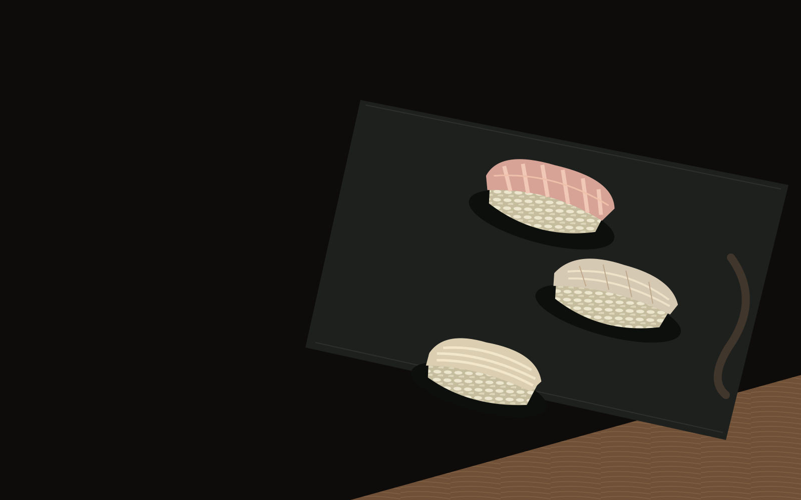

Scrabster Seafoods
CaithnessDay boat mackerel and sea bream, landed the night before.

Omakase in Stockbridge
Chef Daisuke Ono serves a nine course omakase twice each evening, piece by piece, across a single hinoki counter.
Reserve a seatSUMI COUNTER / ORIGINAL STILL LIFE
Daisuke trained for eleven years in Fukuoka and Tokyo before opening Sumi in 2023. The rice is seasoned with red vinegar and served at body temperature.
Please arrive on time. The first piece is served to everyone at once.
A fictional restaurant concept. Chef, provenance and service descriptions are supplied brand copy, not verified claims.
The evening course
A small opening plate, seasonal greens with sesame.
Clear dashi broth with a piece of white fish.
Sea bream nigiri with a brush of nikiri soy.
Hand dived Orkney scallop, a squeeze of sudachi.
Mackerel cured with kombu for two days.
Lean bluefin, marinated in soy for ten minutes.
The fattiest cut of the belly, lightly seared.
A hand roll passed from the chef's hand to yours.
Sweet layered omelette to finish.
£125 per guest · Sittings at 18:00 and 20:30 · Sake pairing £65
Illustrative pairing notes, not a live cellar list.
Junmai · dry, rice-led
Ginjo · aromatic, delicate
Daiginjo · refined, floral
For adults of legal drinking age. Alcohol-free alternatives require direct confirmation.
Friday and Saturday, 12:30 to 14:30
Walk in only. When the rice runs out, we close the counter.
Illustrative menu and hours. Fish, soy, sesame and other allergens may be present. Confirm ingredients and cross contact directly.
The morning's arrival
Supplied sourcing stories, not verified supplier relationships or sustainability certifications.
Day boat mackerel and sea bream, landed the night before.
Scallops collected by divers, never dredged.
Salmon raised at low density in cold sea lochs.
Bluefin and uni flown in twice a week from one trusted buyer.
A place for the evening
Bookings open on the first of each month for the month after.
We can adapt the course for pregnancy and shellfish allergies with three days notice.
This is supplied concept copy, not a medical or allergy safety guarantee. Raw seafood may be unsuitable during pregnancy. Discuss dietary needs with a qualified clinician and the restaurant; no safe accommodation is confirmed here.
0131 555 041814 Raeburn Place, Stockbridge
Edinburgh EH4 1HN
No live booking provider has been supplied. Review the service notes for the next step.